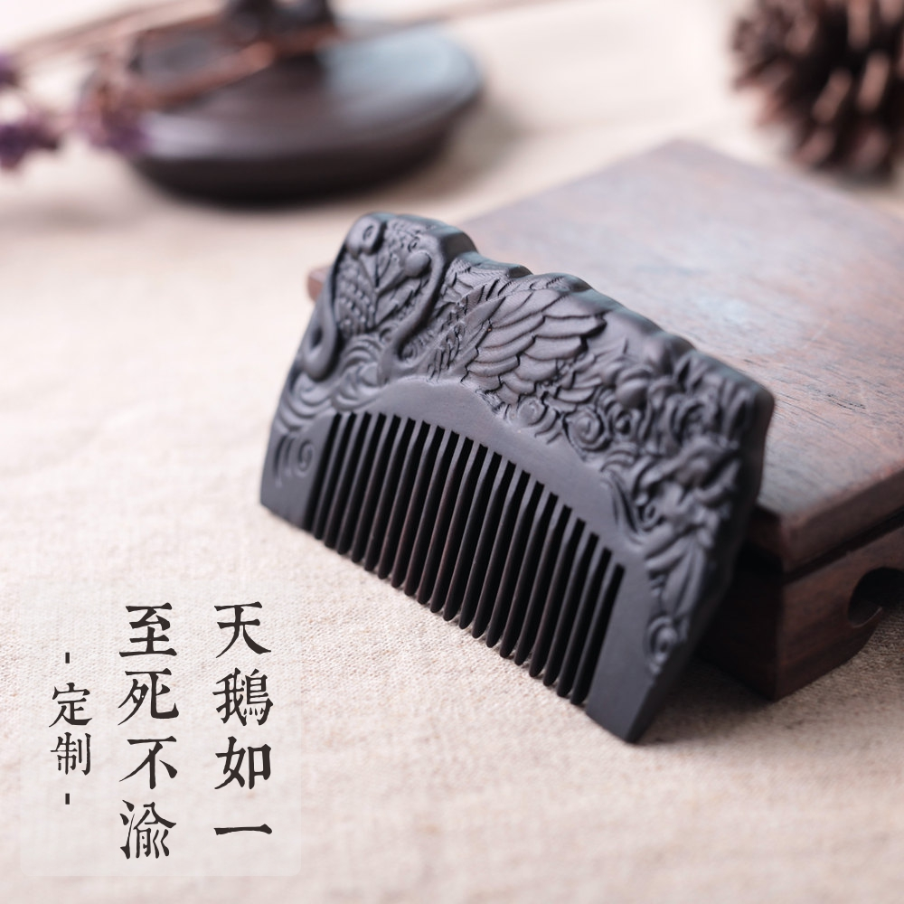

>>檀木简介<<
TAN MU JIAN JIE
檀,梵语是布施的意思，因其木质坚硬，香气芬芳永恒，色彩绚丽多变且百毒不侵，万古不朽，又能避邪，故又称圣檀。
世界上仅存有沈檀、檀香、绿檀、紫檀、黑檀、红檀、金药檀等，而且数量极其有限。其质地紧密坚硬、色彩绚丽多变、香气芬芳永恒，且百毒不侵，又能避邪治病，所以人们常常把它作为吉祥物，以保平安吉祥。
>>新品发布<<
XIN PIN FA BU

>>高端原创<<
GAO DUAN YUAN CHUANG

檀,梵语是布施的意思，因其木质坚硬，香气芬芳永恒，色彩绚丽多变且百毒不侵，万古不朽，又能避邪，故又称圣檀。
世界上仅存有沈檀、檀香、绿檀、紫檀、黑檀、红檀、金药檀等，而且数量极其有限。其质地紧密坚硬、色彩绚丽多变、香气芬芳永恒，且百毒不侵，又能避邪治病，所以人们常常把它作为吉祥物，以保平安吉祥。